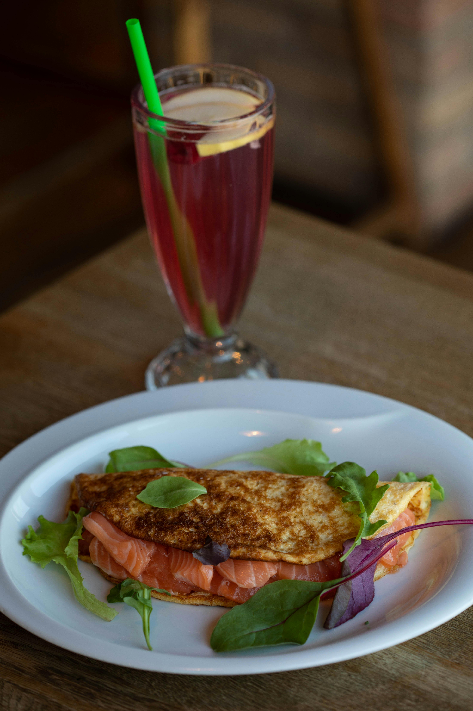

Back
Martabak

Ingredients:
- 250 grams of all-purpose flour
- 1 egg
- 1/2 tsp salt
- 300 ml water
- 2 stalks of green onions (thinly sliced)
- Oil as needed
Cooking Instructions:
- Mix the flour, egg, salt, and water. Stir until well combined.
- Add the green onions and mix again.
- Heat oil in a pan.
- Pour the batter into the pan and spread evenly.
- Cook until both sides are done and golden brown.
- Remove and serve while warm.